Getting started with the freelancer portal
For everyone who works with Ooosh
The portal is where your Ooosh work lives: your jobs, where to go and who to call, finishing each job off, and what you've earned.
freelancer.oooshtours.co.uk is the only site you need. It works best on your phone.
Add it to your home screen so it opens like an app. iPhone: tap Share, then Add to Home Screen. Android: tap the menu, then Add to Home screen.
Five things to remember
- Read the key notes on every job, the day before and again on the day.
- Finish every job off in the portal, on the day. If you don't, we send reminders.
- Can't make a job? Call the office straight away on 01273 911382.
- Put our job reference (the HH number) on your invoice, and email it as a PDF to whoever booked you.
- Wondering about a payment? Check Earnings first.
1
Sign in
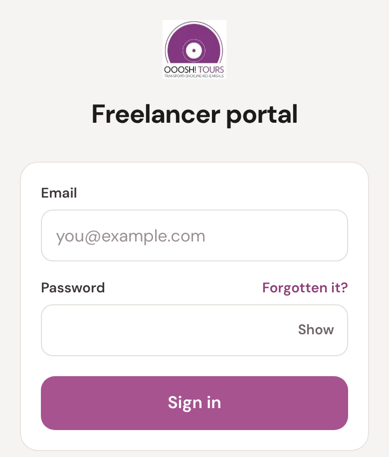
First time? Tap Create an account at the bottom of the page and use the email address you gave us. We email you a 6-digit code, then you choose a password (8 characters or more).
The code only comes once we've approved you to work with us. No code after a few minutes? Check your junk folder, then ask whoever booked you.
Forgotten your password? Tap Forgotten it? and we'll email you a link to set a new one.
If we ever email you a sign-in code, type it in. Leave Remember this phone ticked on your own phone and it won't ask again there for 90 days.
2
Your jobs
Signing in opens your jobs. Today's work is at the top, with its fee on the right.
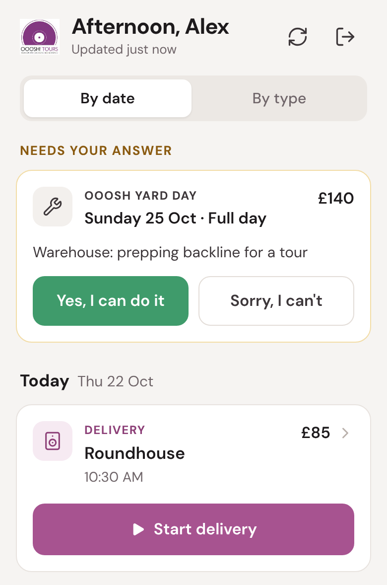
- Today, Tomorrow, Later (the next 30 days) and Earlier (the last few days). Tap By type to see them grouped by kind of work instead.
- Tap a job to open it.
- Tap Refresh (top right) to check for changes.
3
Offers, and the rest of your list
We offer yard days in the portal. They sit at the top under Needs your answer until you reply.
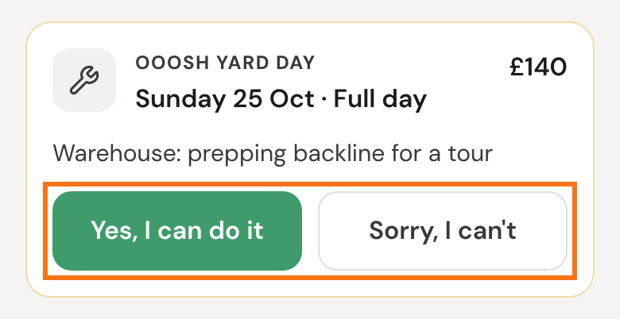
Other jobs are booked by the office, so there's nothing to accept. If you can't do one, call the office straight away. Please don't just leave it.
At the bottom of your list, Completed and Cancelled show your recent past work.
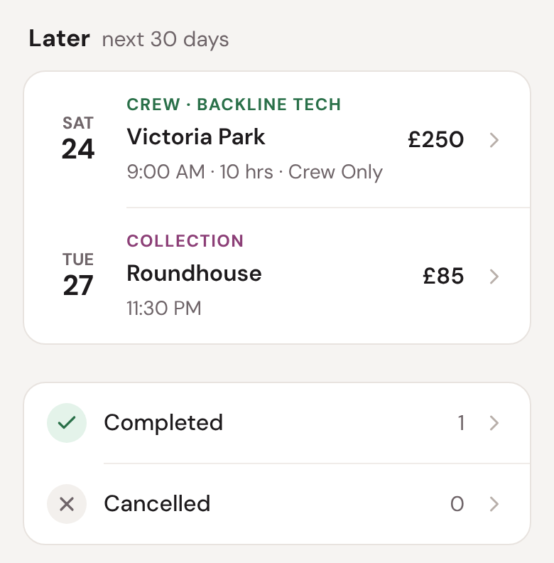
4
A job's page
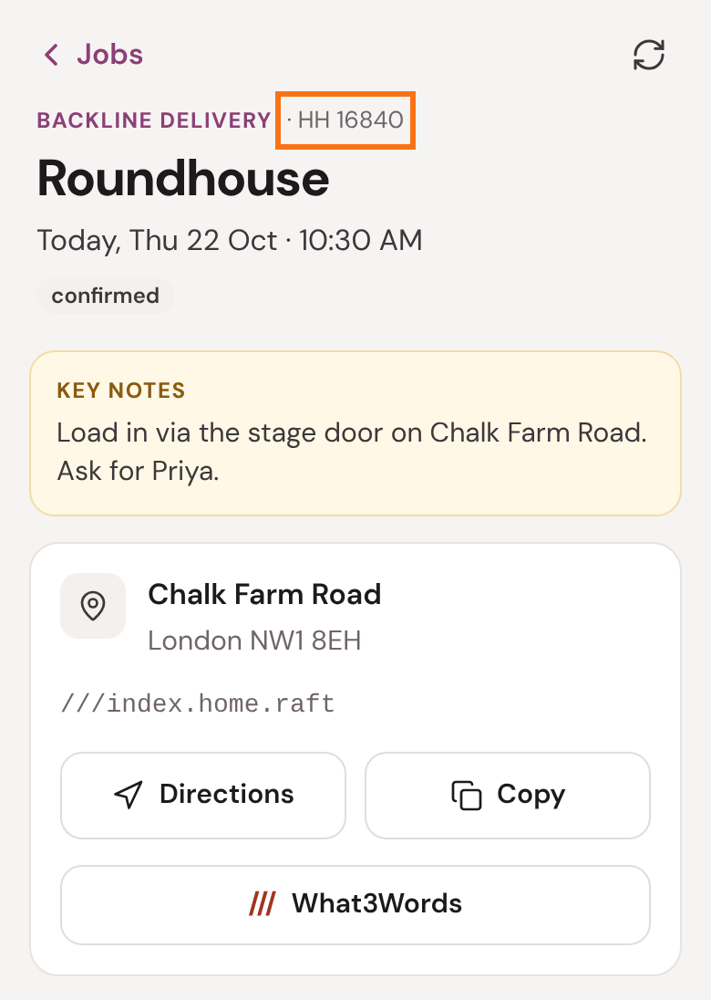
- HH 16840 is our job reference. Put it on your invoice.
- Key notes are what we need you to know for this job. They can change, so read them the day before and again on the day.
- Directions opens your maps app; Copy copies the address; What3Words pins the exact spot.
5
Who to call, and your fee
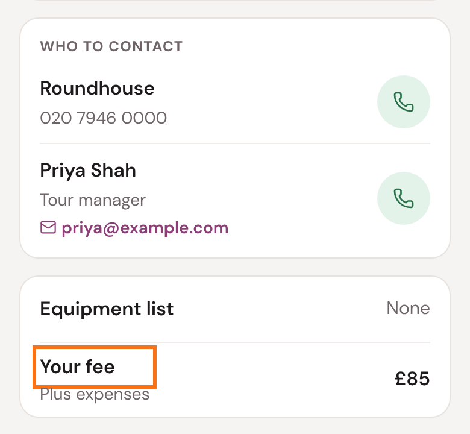
- Who to contact: the venue and the people on the job. Tap the green button to call. A venue's number shows from 48 hours before the job.
- Equipment list: tap it to see what's going.
- Your fee is what we've agreed to pay you, plus any agreed expenses. If it looks wrong, ask whoever booked you before you invoice.
Further down are the venue's access info and any files for the job.
6
Doing the job
Deliveries and collections: when you get there, tap Start delivery (or Start collection) at the bottom of the job. It asks what you're handing over and takes you through it step by step.
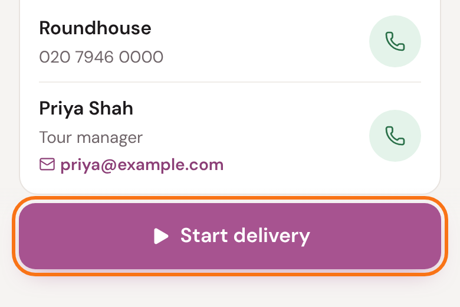
Resources has a step-by-step guide for vans and for backline.
Crew jobs: tap Complete job at the end. It appears on the job's last day.
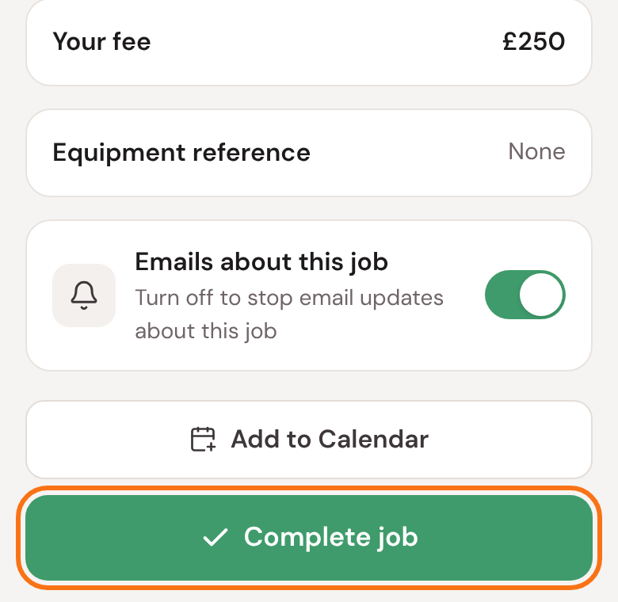
7
Finish it on the day
Finishing a job off in the portal tells us it's done, sends the customer their paperwork, and lets us invoice them. Please do it on the day, before you leave.
If a job isn't finished off, we email you a reminder a couple of hours after it was due, and again later that day. The third reminder goes to the office too. Crew jobs are chased from the morning after their last day.
We only send reminders between 7am and 10pm.
No signal at the venue? Finish it off as soon as you have some, the same day.
8
Emails from us
We email you when you get a new job, when one changes and when one is cancelled. To stop emails about one job, use the switch on its page.
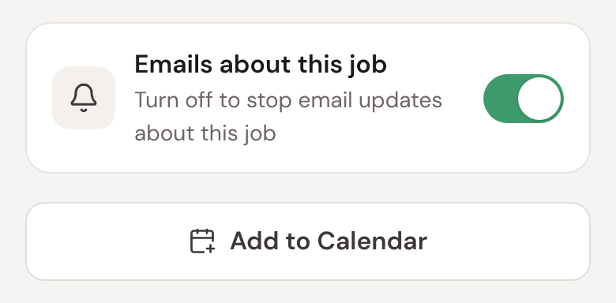
To pause them all, for a holiday say, go to Settings (next page).
Pausing job emails
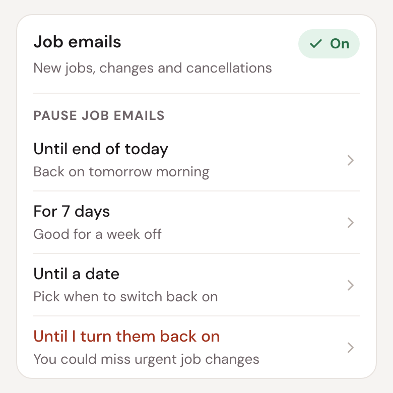
Pausing stops emails about new jobs and changes. While they're paused, a banner at the top of the portal says so, with a Resume button.
These still reach you while paused, because you need them:
- a job being cancelled;
- reminders to finish a job off;
- yard-day offers and changes to them;
- sign-in codes and password emails.
9
Resources
Tap Resources at the bottom of the screen for our guides, policies and agreements, including How to invoice Ooosh Tours Ltd.
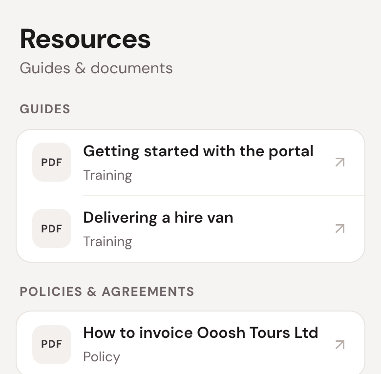
Tap one to open it. Guides open in a new tab, so you can come back to the portal.
10
Getting paid: your invoice
Email your invoice as a PDF to whoever booked you. We can't take posted, printed or other file types.
It must have:
- the word "invoice", a date and your own invoice number;
- your name, address and contact details, and an email address for the remittance;
- our name and address (it's on the How to invoice guide);
- our job reference: the HH number on the job's page;
- what you did and when, with any expenses and their receipts;
- the amounts and the total;
- your bank name, account number, sort code and account name;
- your VAT number, company number or UTR, if you have one.
The full list is in How to invoice Ooosh Tours Ltd in Resources. An invoice that's missing something comes back to you, which delays your payment.
11
Getting paid: Earnings
Tap Earnings to see your invoices, where each one has got to, and when your next payment is due.
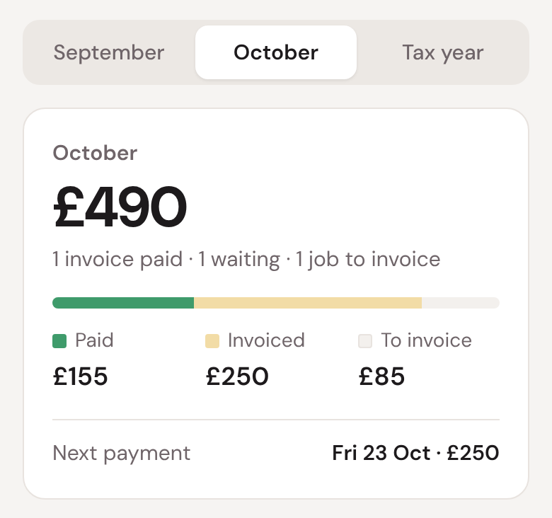
- Paid: paid to you in that month.
- Invoiced: invoices sent that month that we haven't paid yet.
- To invoice: work you've done that isn't on an invoice yet.
Where your invoice has got to
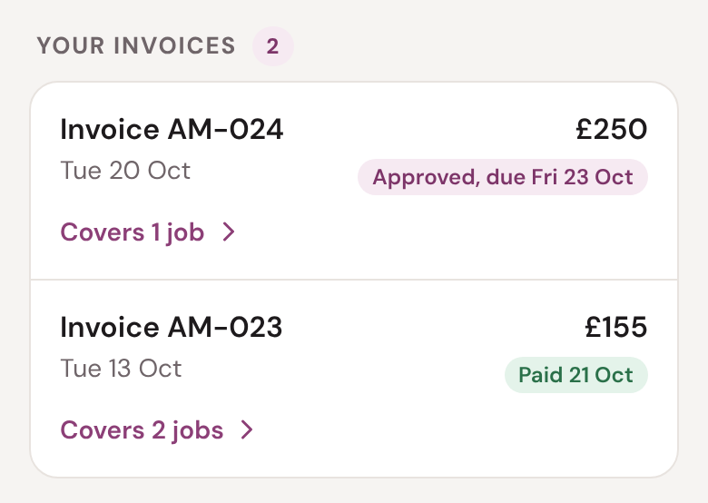
| Received | We have it and haven't checked it yet. |
| Queried | We have a question. It's shown under the invoice: reply to whoever booked you. |
| Approved, due Fri 23 Oct | All fine. We'll pay it on that Friday. |
| Paying Fri 23 Oct | The payment is booked for that day. |
| Paid 21 Oct | The money left us that day. |
Tap Covers 2 jobs to see the work an invoice is for.
When you'll be paid
We pay on the first Friday one week after we approve your invoice, so usually 8 to 14 days after approval, by bank transfer. Bank holidays can add a day or two.
Please check Earnings before chasing a payment. If an invoice still isn't paid 30 days after you sent it, email accounts@oooshtours.co.uk.
Changed your bank details? Say so on your invoice and in your email. We may call you to check, to keep your money safe.
Some older work shows no To invoice or Invoiced label: we started matching invoices to jobs in October 2026.
?
If something's not right
- I can't sign in.
- Tap Forgotten it? to set a new password. Still stuck? Call the office on 01273 911382.
- A job is missing, or looks wrong.
- Tap Refresh. If it's still wrong, call whoever booked you or the office.
- I can't do a job any more.
- Call the office straight away. The sooner we know, the easier it is to cover.
- My fee looks wrong.
- Ask whoever booked you before you invoice.
- Where's my payment?
- Check Earnings. Still unpaid 30 days after you sent the invoice? Email accounts@oooshtours.co.uk.
- My name, email or phone number has changed.
- Let us know and we'll update it. You can't change them in the portal yourself.
The office: 01273 911382 · info@oooshtours.co.uk
Invoices and payments: accounts@oooshtours.co.uk